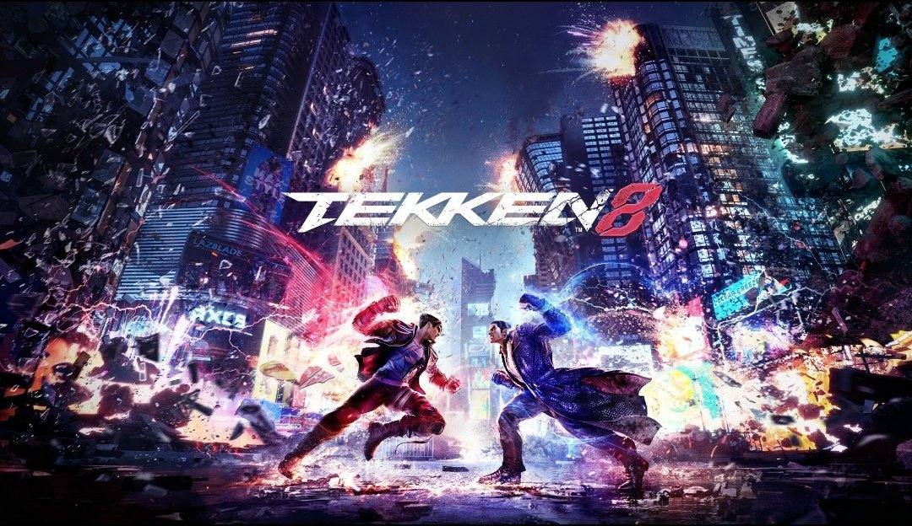

New Generation of Competitive Fighting Games

Street Fighter 6 is the latest entry in the Street Fighter series. Released on June 2nd, 2023, the game has already had its first competitive season finish, culminating in the end of the Capcom Pro Tour at Capcom Cup X in February with a $1,000,000 grand prize. Gameplay focuses on the highly explored Drive Meter, functioning as a secondary healthbar that requires players to utilize strategic meter management in the heat of battle. The game continues to smash entrant records at open bracket tournaments, such as at EVO 2023 in Las Vegas. With its impeccable online experience and fleshed out single player modes, Street Fighter 6 is shining brightly nearing the end of its first year.

Tekken 8 released earlier this year on January 26th, 2024. The newest title in the King of Iron Fist series features a unique departure from previous system mechanics with the Heat Guage. As a response to the primarily defensive play seen at high levels, Heat allows for more aggressive interactions at all levels of play. This entry in the series is also the first to have a simulatenous release worldwide, as previous games had early releases playable in Arcades in specific countries. With the Tekken World Tour beginning soon, the game is shaping up to be the best Tekken experience yet.